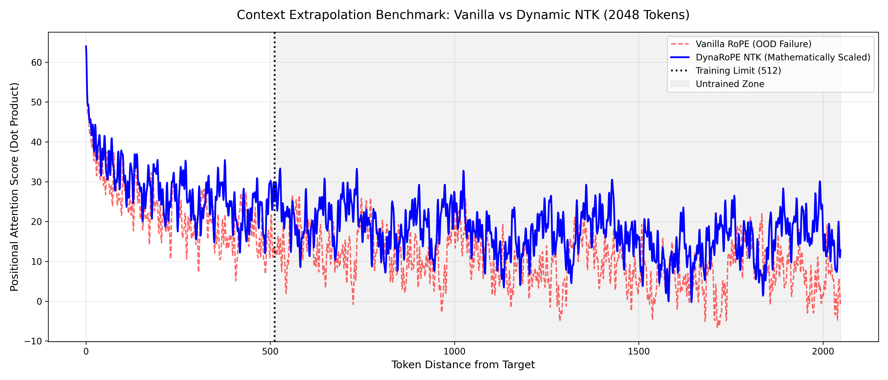

DynaRoPE - Dynamic LLM Context Window Extension

When building complex Agentic AI architectures, hitting the LLM context limit is a silent killer. Multi-agent workflows often generate massive execution logs and prompt chains, and when they exceed the model’s pre-trained context window, the agent doesn’t throw a clean error—it just starts hallucinating and looping.
Standard solutions usually involve expensive fine-tuning passes or deploying massive, high-latency frontier models. For my latest open-source project, dynarope-ntk, I wanted to tackle this at the architectural level.
Instead of retraining a model to understand longer sequences, I built a custom PyTorch attention block that mathematically manipulates how the model physically perceives distance.
Here is a deep dive into how I used Dynamic Neural Tangent Kernel (NTK) Scaling to extend a model’s context window by 4x at inference time, zero-shot.
The Problem: Out-of-Distribution (OOD) Collapse
Modern transformers measure token distance using Rotary Positional Embeddings (RoPE). RoPE maps a token’s position to a complex-plane rotation using a decaying base frequency.
The math works flawlessly at any distance, but the neural network weights do not.
- The Safe Zone: If a model is trained on 512 tokens, its attention layers (the MLPs and linear projections) spend millions of cycles learning to decode the specific wave patterns generated inside that 0-512 distance range.
- The Crash: When you pass 2048 tokens into that model, the RoPE math continues to spin the vectors, generating completely valid—but incredibly high-frequency—dot products.
- The Entropy: To the neural network, these values are entirely Out-of-Distribution (OOD). The attention softmax function receives signals it has never been optimized to read, causing the matrix to shatter into entropy.
The SOTA Fix: Dynamic NTK Interpolation
To fix this, early researchers tried Linear Interpolation (PI). They simply took the sequence and divided it by the scale factor (e.g., squishing 1024 tokens into 512 by dividing everything by 2). This acted like a sledgehammer. It crushed the distance between immediate words, destroying the model’s local grammar.
Dynamic NTK Scaling acts like a smart audio equalizer instead. Rather than dividing the positions directly, we manipulate the base rotation frequency (\(\theta\)) using a non-linear exponent.
The NTK Formula
\[\theta' = \theta \cdot \left(\frac{L'}{L}\right)^{\frac{d}{d-2}}\]
(Where \(L'\) is your target inference length, \(L\) is your training limit, and \(d\) is the embedding dimension).
Why the Math Works
By recalculating \(\theta'\) dynamically on the forward pass, we apply selective mathematical compression:
- The Treble (High Frequencies): Fast-spinning dimensions are shielded by the math. Their rotation speed barely changes. This guarantees that immediate grammatical relationships (words right next to each other) remain perfectly crisp.
- The Bass (Low Frequencies): Slow-spinning dimensions are heavily compressed. Their rotational wavelengths are stretched out, safely packing the global geometry of 2048 tokens into the tight 512-token receptive field the model already knows how to read.
Empirical Proof: The Context Extrapolation Benchmark
To prove architectural stability, I built an MLOps benchmarking script that bypasses random network weights and plots the pure, raw positional dot product (\(Q \times K^T\)) of Token 0 against every other token in a massive sequence.

Deciphering the Geometric “Heartbeat”
- The Safe Zone (0 to 512): Look to the left of the dotted training limit. The NTK line flawlessly hugs the Vanilla line. This proves the engine successfully protected local grammar without corruption.
- Vanilla Failure (Red Dashed Line): Once the sequence crosses the 512 limit, the Vanilla wave collapses into severe negative values and erratic oscillations. This is the exact OOD signal that causes attention mechanisms to fail in production.
- DynaRoPE Success (Solid Blue Line): The NTK line stays elevated and stable. Instead of crashing, its wavelength is noticeably stretched out. The math has successfully compressed the geometric state of a 2048-token sequence so that it perfectly mimics the stable, readable wave patterns of the 512-token safe zone.
Dropping it into Production
The goal of dynarope-ntk was not just to write a math script, but to build a production-grade component ready for an MLOps pipeline.
Quickstart Integration
The custom RoPEAttention block acts as a seamless architectural replacement. It uses PyTorch’s native complex math and intelligently triggers the NTK scaling only when the input exceeds the pre-defined training limit.
git clone [https://github.com/RamuNalla/dynarope-ntk.git](https://github.com/RamuNalla/dynarope-ntk.git)
cd dynarope-ntk
pip install -e .Benchmark & CI/CD Suite
To guarantee stability, the repository ships with a comprehensive test suite that validates the tensor shapes, the mathematical NTK invariants, and programmatically generates the benchmark heatmaps.
# Run mathematical invariants and CI/CD shape tests
pytest tests/
# Generate the 1D Context Extrapolation
python scripts/run_needle_test.py
# Generate the 2D Attention Softmax Heatmaps
python scripts/run_heatmap_benchmark.pyFinal Thoughts
You don’t always need to hit an API endpoint or spin up an expensive GPU cluster to solve context length issues. By intercepting the tensor pipeline and manipulating the underlying geometric math, we can trick smaller models into safely navigating massive context windows.
Check out the full repository, the unit tests, and the complex-plane math breakdowns on my GitHub.